ENGINEERING BLOG ドコモ開発者ブログ
https://nttdocomo-developers.jp/
ENGINEERING BLOG ドコモ開発者ブログ
フィード
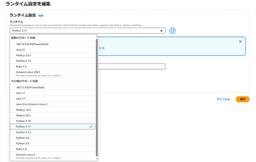
このままだと切り戻しができない！？AWS Lambdaランタイム更新で一瞬焦った話とリカバリー方法
ENGINEERING BLOG ドコモ開発者ブログ
はじめに NTTドコモ情報システム部の山川と申します。 AWS LambdaでPython 3.7のサポート終了に伴って、リリース作業に多少の工夫が必要な状況になってしまった時の対応と学びについて共有します。 AWS LambdaでPython 3.7のサポート終了を迎え、ランタイムのアップデートを進める必要がありました。しかし、対応が遅れた結果、AWSの非推奨化フェーズ2を超えてしまい素直にランタイムを更新するだけだと、万が一の切り戻し作業ができない状況に直面しました。 ※切り戻しとはリリース作業後に問題が発生した際にリリース前の状態に戻すことを指す AWS Lambdaのランタイム非推奨化…
1時間前
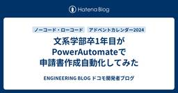
文系学部卒1年目がPowerAutomateで申請書作成自動化してみた
ENGINEERING BLOG ドコモ開発者ブログ
はじめに そもそもPowerAutomateって？ 取り組みの経緯 申請書作成自動化への取り組み 苦労した点①(シートの保護) 苦労した点②(原因不明のエラー) その他のPowerAutomate活用例紹介 ファイルへのアクセス権自動付与 保管期限切れファイル自動削除 最後に はじめに はじめまして。NTTドコモ サービスデザイン部の藤田です。 本記事では私が初めて触れるPowerAutomateを用いて、業務効率を向上させた活用例をご紹介いたします。 そもそもPowerAutomateって？ PowerAutomateはMicrosoft社が提供する、 Robotic Process Aut…
1時間前
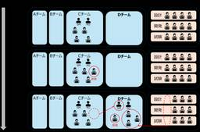
ウォーターフォール開発チームを真のアジャイルチームに変革する際にぶち当たった3つの壁
ENGINEERING BLOG ドコモ開発者ブログ
TL;DR 自己紹介 新チーム立ち上げ前の状態 変革過程でぶち当たった3つの壁 考え方の移行：慣れ親しんだやり方に引っ張られる 関係性の移行：心理的安全性が高まらない 関連性の移行：チームが単独でリリースすることが難しい 今後の展望/最後に TL;DR 本記事では、社内マーケティング機能を開発しているウォーターフォール開発チームをアジャイルチームに移行した事例を紹介します。ただ単に開発手法を変えるだけでは、アジャイルなチームとは言えません。真のアジャイルを実現するために必要な「考え方」「関係性」「関連性」の移行をどのように行ったかご紹介します。 自己紹介 NTTドコモのデータプラットフォーム部…
1時間前
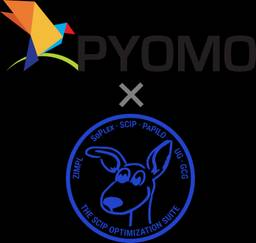
Pyomo×SCIPは組合せ最適化にて最強… 覚えておけ
ENGINEERING BLOG ドコモ開発者ブログ
はじめに NTTドコモ クロステック開発部の佐藤です。普段は農業で画像認識技術を活用することに取り組んでまして、病気の葉っぱの検出に勤しんでおります。 こちらの記事では、組合せ最適化問題を解く上で、現状ベストプラクティスのひとつではと思う実装方法についてご紹介したいと思います。 対象読者は、初めて数理最適化の実装をしてみるという方や、何度かはやったことあるけどより良い方法を知りたいという方向けです。 タイトルの通り主観も入り気味ですが、ご容赦下さい！ 組合せ最適化問題とは 組合せ最適化問題とは、何らかの制約条件のもと、同じく何らかの目的関数を最大化ないし最小化させるような、決定変数の組合せを求…
1時間前
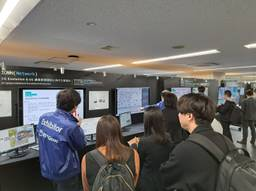
6Gの取組みをNTT R&D FORUM 2024に出展しました！
ENGINEERING BLOG ドコモ開発者ブログ
こんにちは！6Gテック部の久米です。NTT R&D FORUM 2024に出展した、6Gに向けた取組みに関する技術の内容をご紹介します。 1. 展示概要 展示会の概要 私たちの参加目的 2. 5GE & 6G ブース紹介 Network for AI Efficiency Customer Experience 3. 産業利用ブース紹介 4. HAPSブース紹介 5. まとめ 1. 展示概要 展示会の概要 NTT R&D Forum 2024（以下フォーラム）は、2024年11月25日～29日にかけてNTT武蔵野研究センターで開催されました。 今年のフォーラムのテーマは「INTEGRAL」で、…
1時間前
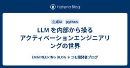
LLM を内部から操るアクティベーションエンジニアリングの世界
ENGINEERING BLOG ドコモ開発者ブログ
LLM の出力を制御する手法であるアクティベーションエンジニアリングを紹介いたします。この手法は、LLM の中間出力にベクトルを加減算し LLM の出力を誘導するユニークなものです。プロンプトエンジニアリングの代替としても利用できます。
1時間前
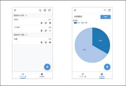
Google AppSheetを使ったアプリ作成方法のご紹介 〜 家事管理アプリの作り方 〜
ENGINEERING BLOG ドコモ開発者ブログ
はじめに こんにちは。NTTドコモ サービスイノベーション部の大西です。 普段の業務ではマーケティング関連のデータ分析や開発をしています。 また趣味でGAS（Google Apps Script）やGoogle AppSheetを使って簡単なアプリなどを作っています。 AppSheetで作成した家事管理アプリについて以前社内で話した際に受けが良かったため、本記事ではその作り方を紹介したいと思います！ はじめに AppSheetとは 対象者 今回作るもの アプリ作成方法 1. スプレッドシートの用意・AppSheetへの移動 2. タスク管理機能の実装 3. 集計・可視化機能の実装 さいごに 参…
1時間前
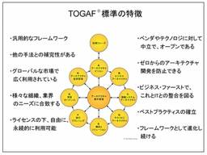
TOGAF®9トレーニングコースに参加してきました
ENGINEERING BLOG ドコモ開発者ブログ
はじめに はじめまして、NTTドコモ情報システム部の伊山です。 2024/7/3-5の3日間、オープン・グループ・ジャパン主催のTOGAF®9トレーニングコースに参加させていただき、無事に認定をいただくことができました。 今回の受講のきっかけとしては、今後のキャリアを見据えた際に、企業全体としてのIT戦略を考える上での手法について知りたかったためです。 今回のトレーニングコースを通じて視座を高めるきっかけにもなったので、現状IT戦略に携わっている方だけでなく、私のように開発・運用業務に携わる方にも是非チャレンジしていただきたいです。 まだまだ日本においてマイナーな資格であるのか、私の受験時にQ…
1日前
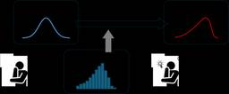
Stanで動かすベイズ的機械学習 ~医療費データの分析例~ 3
3
ENGINEERING BLOG ドコモ開発者ブログ
本記事は、ドコモアドベントカレンダー2024 19日目の記事です🎄 こんにちは！NTTドコモ クロステック開発部の畑元です。業務ではヘルスケア領域におけるデータ分析やAI開発を行っています。 この記事ではベイズ推論による機械学習とRStanを用いた分析例をご紹介します。データサイエンス分野の方には馴染みのある話かもしれませんが、私はよく忘れてしまうので頭の整理も兼ねて書いていこうと思います。 ※数式が崩れる方は、数式の上で右クリックして、Math Settings > Math Renderer > Common HTMLへ設定をご変更ください 1. はじめに 2. ベイズ推論について ベイズ…
1日前
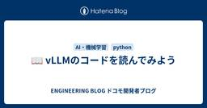
📖 vLLMのコードを読んでみよう 1
ENGINEERING BLOG ドコモ開発者ブログ
LLMの推論およびモデルサービングに利用されるOSSであるvLLMの動きについて、コードを追いながら理解を深めようと試みる。
1日前
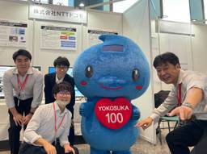
YRPオープンイノベーションデー2024 に参加してきた！
ENGINEERING BLOG ドコモ開発者ブログ
こんにちは！6Gテック部の谷口です。今回は、今年の10月に参加した「YRPオープンイノベーションデー2024」についてご紹介します。無線通信技術に関する最新の取組みを多くの方々にご紹介する貴重な機会となりました。 1. 展示概要 2. ブース紹介 3. 展示会でのハイライト 4. 終わりに 関連リンク 1. 展示概要 展示会の概要 「YRPオープンイノベーションデー2024」は、2024年10月18日（金）～19日（土）に横須賀市光の丘YRPセンター1番館（ドコモR&Dセンターのお隣！）で開催されました。この展示会は、YRPオープンイノベーションデー実行委員会が主催となって年に一度開催されてお…
1日前
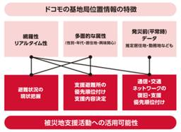
大学院で防災研究していた私が、会社の力とちょっとしたデータの可視化でちょっぴり世の役に立った話
ENGINEERING BLOG ドコモ開発者ブログ
はじめに NTTドコモ データプラットフォーム部(以下DP部)23新卒の江口公基です。 普段はドコモが保有する顧客基盤データ(以下ドコモデータ)による価値創出のためのパートナー企業向けデータプロダクトの企画/開発を行っております。私は特にドコモデータの中でも位置情報データを用いたまちづくり分野(防災,観光,交通など)の価値創出にバックグラウンドと強い興味関心を持っています。本稿ではその中でも、今年2024年の元日に起きた令和6年能登半島地震において、後方支援にまわり位置情報データにより価値を見出し、最終的には石川県庁へ復旧・復興の基礎情報となるデータ提供を行った取り組みを簡単に紹介させて頂きま…
1日前
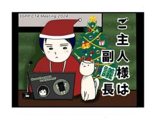
国際標準化担当はサンタクロース？！ （「ご主人様は副議長」クリスマスバージョン！） 1
ENGINEERING BLOG ドコモ開発者ブログ
NTTドコモ R&D Advent Calendar 2024 の19日目の記事です。 NTTドコモの社内メディアである“docomo EVERYDAY”で連載中のグローバル業務・国際標準化解説マンガ「ご主人様は副議長」が、クリスマス特別バージョンとしてドコモアドベントカレンダー2024に登場！国際標準化業務について、その内容と魅力を語ります。 ※1 本記事は季節柄、あくまでも標準化会議を説明するためのアナロジーとして「サンタ制を導入している国による国際会議」というフィクションの設定を用います。特定の宗教・文化などを揶揄・排除する意図はありません。 ■国際標準化業務ってなあに？ ※2 石川の記…
1日前
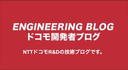
3年目社員が始める開発者としてのレビューコミュニケーション
ENGINEERING BLOG ドコモ開発者ブログ
はじめに NTTドコモ データプラットフォーム部（以下DP部）の3年目の福本です。 普段はクラウド設計や関連部署との調整作業をしています。 また、私は7月からデータ活用プロダクトの内製開発にも参画しており、 本プロジェクトにおいて、初めて社会人としてコーディングを含む開発作業に関わる機会がありました。 今回はこのプロジェクトでの開発についてお話させていただきます。 私のような若手の皆様は、学生の頃に個人開発やハッカソンを経験している一方で、業務での開発におけるコード管理手法については、よくわからない、という方も多いのではないでしょうか？ 特に、レビューというプロセスにおいては、「なんか偉い人に…
2日前
顧客価値向上に向けたオブザーバビリティ活用のポイント 〜 New Relic の導入からBiz・Dev・Ops連携強化に向けた取り組み 〜
ENGINEERING BLOG ドコモ開発者ブログ
NTTドコモの提供する映像配信サービス『Lemino』について、New Relic の導入をきっかけに、Biz・Dev・Ops連携を強化し、顧客価値向上に向けたオブザーバビリティを活用するためのポイントについてご紹介します。
2日前
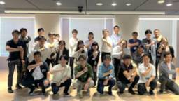
働きやすい環境は自らつくる！PowerAutomate/PowerAppsの活用事例コンテストを開催
ENGINEERING BLOG ドコモ開発者ブログ
NTTドコモ 第一プロダクトデザイン部の本郷です。普段は人材育成担当として、お客様体験の向上に向けて、アジャイルやクラウド、プログラミングなどの研修や勉強会、イベントを企画・運営しています。 この記事では、2024年6月から9月にかけて第一プロダクトデザイン部/第二プロダクトデザイン部で合同開催した、PowerAutomate/PowerAppsの活用事例を創出する「Powerチャレンジコンテスト（以下、パワチャレ）」という施策について、運営者の視点から取り組みの全体像をご紹介します。 チャレンジ称賛！最後に実施した参加者イベントの様子 パワチャレとは 社員自らデジタル活用による自業務の改善を…
2日前
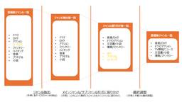
LLMで爆速改善！たった3人で始めるマスターデータマネジメント
ENGINEERING BLOG ドコモ開発者ブログ
1. 概要:LLMを使ったマスターデータマネジメント 2. ジャンルメタデータの課題と対策 3. ジャンル集約プロセスの詳細 3.1. 実行プロンプト 3.2. 工夫した点:2階層構造の採用とジャンルの粒度調整 3.3. はまった点:LLMが苦手とする領域での工夫 4. 実施結果 5. まとめ 1. 概要:LLMを使ったマスターデータマネジメント NTTドコモ データプラットフォーム部の外山です。 NTTドコモでは、携帯回線事業の他、お客様の新たなライフスタイルを創出するスマートライフ事業を運営しており、 とりわけエンターテインメント領域では、書籍、映像サービスを提供しています。 豊富なコンテ…
3日前
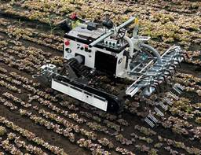
CAN’t communicate?! - CAN のススメとトラブル解決への道-
ENGINEERING BLOG ドコモ開発者ブログ
本記事では組み込み(ハード寄り)を触り始めた方を対象とし、業務の 1 つである NVIDIA Jetson を使った農業ロボットの紹介と、最近発生したトラブル事例をご紹介します。
3日前
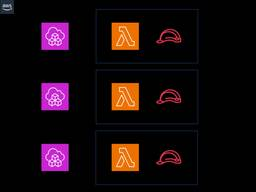
IAMロール問題解決に向けた戦略と実践
ENGINEERING BLOG ドコモ開発者ブログ
プロジェクトの中で直面したIAMロールのハードリミット上限問題とその解決策について解説。クラウド環境での効率的なシステム運用を目指します。
3日前
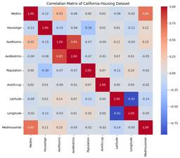
VSCodeにGithubCopilotを導入してデータ分析してみた
ENGINEERING BLOG ドコモ開発者ブログ
この記事ではGithub Copilotを使った機械学習モデルの作成方法とその効率化について紹介しています。
3日前
画像生成AIを活用した社内イベントを開催しました（全社編）
ENGINEERING BLOG ドコモ開発者ブログ
はじめに 本記事をご覧いただきありがとうございます。 NTTドコモ クロステック開発部の画像⽣成AIチーム（福島、井⼿、⼩原、中村圭佑）です。 近年話題の⽣成AIについて、先⽇の記事や昨日の記事でご紹介した通り、Slackアプリの形で画像⽣成AI＆VLM（Vision Language Model）の2種類の⽣成AIが利⽤可能なシステムを社内向けに提供しました。 画像⽣成AIを使って思い通りの画像を⽣成するにはコツがいること、また世の中では画像⽣成AIの不適切な利⽤も散⾒されることから、このシステムの提供に際して、正当な画像⽣成AIの利⽤促進を⽬的とした全社向けのイベントを実施しました。 当初…
4日前
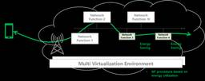
通信をもっとサステナブルに！ネットワークの未来を支えるEnergy efficiencyの仕組み
ENGINEERING BLOG ドコモ開発者ブログ
当記事は3GPP SA1/SA2/SA5におけるEnergy efficiencyに関する取り組みを紹介する記事です。 はじめに ネットワーク省電力化でネットゼロへ貢献 Energy関連ユースケースやシステムアーキテクチャの紹介 Energy関連ネットワーク管理の仕組み 最後に はじめに こんにちは！NTTドコモ 6Gテック部の黒岩と田村です。5G時代においてもサステナブルな取り組みが注目されています。ドコモは、温室効果ガス排出削減目標をサプライチェーン全体に拡大するという2040年ネットゼロをめざすなど、脱炭素社会の実現に向けてネットワーク消費電力を削減する技術の開発や設備の導入などに取り組…
4日前
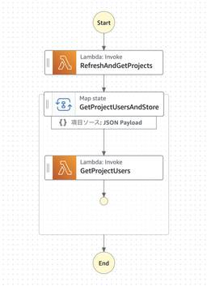
ECSのループ処理をAWS Step FunctionsのMAPで高速化！初心者向け解説
ENGINEERING BLOG ドコモ開発者ブログ
AWS Step Functionsを活用して、従来のシーケンシャル処理を効率的に並列処理へと変え、全体の処理速度を大幅に向上させた成功事例をご紹介します。
4日前
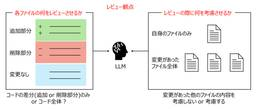
GitHub ActionsとLLMで実現する自動コードレビューの仕組み 1
ENGINEERING BLOG ドコモ開発者ブログ
自己紹介 NTTドコモ データプラットフォーム部（以下DP部）矢野です。 DP部では生成AIをビジネス活用すべく様々な取り組みを行っています。 今回執筆いただいた協働者の森さんとは、DP部が展開する社内の分析サービスに生成AIを用いて効率化や生産性の向上ができないかを詳細検討・実装・運用を一緒に取り組んでいます。 本記事では我々の生成AI取り組みの一端が見渡せるような記事に出来たらと考え、GitHub ActionsとLLMを利用した自動コードレビューについて紹介していただきます。 モチベーション ドコモでは、Google Cloud上にStreamlitを利用したサーバレスプラットフォームを…
4日前
画像生成AIを活用した社内イベントを開催しました（部内編）
ENGINEERING BLOG ドコモ開発者ブログ
はじめに NTTドコモ クロステック開発部の画像生成AIチーム（福島、井手、小原、中村圭佑）です。近年話題の生成AIについて、先日の記事の通り、Slackアプリの形で画像生成AI＆VLM（Vision Language Model）の2種類の生成AIが利用可能なシステムを社内向けに提供しました。 画像生成AIを使って思い通りの画像を生成するにはコツがいること、また世の中では画像生成AIの不適切な利用も散見されることから、このシステムの提供に際して正当な画像生成AIの利用促進を目的とした社内向けのイベントを開催しました。本記事では、こちらのイベントの様子をご紹介いたします。 前編となる本記事では…
5日前
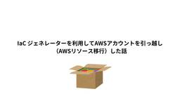
IaC ジェネレーターを利用してAWSアカウントを引っ越し（AWSリソース移行）した話
ENGINEERING BLOG ドコモ開発者ブログ
こんにちは。ドコモ・テクノロジ サービスインテグレーション事業部の伊藤です。 私はCCoE（Cloud Center of Excellence）という役割として、ドコモグループのクラウド活用を推進する業務を行なっています。 そのひとつとして、グループのシステム開発・運用効率向上を目的とする様々なツールを提供しています。 ツールにはAWS上で構築・運用しているものもあり、今回あるツールのAWSアカウントの引っ越し（リソースの移行）を行ったため、その経験をもとに内容を共有したいと思います。 また引っ越しを行う中で、AWS CloudFormationのIaC ジェネレーターという機能がとても便利…
5日前
Cloudwatch Logs Insightsでログを集計する話
ENGINEERING BLOG ドコモ開発者ブログ
簡単にアプリケーションログを分析できるCloudWatch Logs Insightsの活用法を紹介。初心者が理解しやすいクエリ例と新機能を詳しく説明します。
6日前
AWS Lambda layer をデプロイする 4 つ+α の方法
ENGINEERING BLOG ドコモ開発者ブログ
はじめに 始めまして、NTT ドコモサービスイノベーション部の小川です。 aws の lambda でサーバーレスの仕組みを作りたいとなったときに、往々にして lambda にデフォで入ってるライブラリでは足りない！となることはあると思います。 本記記事では、ライブラリ足りないとなったときに aws cdk を使ったデプロイ方法 4 つ＋外伝を 1 つ紹介していきます。 では、早速内容に入っていきましょう！ 自己紹介 NTT ドコモでは R&D のサービスイノベーション部に所属しています。 業務は 大量制御信号データを有益なデータにパースするための基盤開発チーム NW 情報をどんどん見える化し…
6日前
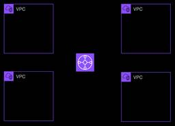
Transit GatewayとNACLでハマった話
ENGINEERING BLOG ドコモ開発者ブログ
はじめに この記事はドコモR＆D Advent Calendar 2024の14日目の記事です。 初めまして！NTTドコモ サービスイノベーション部 ビッグデータ基盤担当の竹鼻です。入社2年目になります。社内のビッグデータ基盤の保守運用や新機能の開発に携わる担当をしています。本記事ではAWSのサービスの勉強をしているときにハマったTransit GatewayとNACLの関係について紹介しようと思います。 はじめに 1.要約 2. Transit Gatewayとは ①VPC Peeringを使う場合 ②Transit Gatewayを使う場合 3. NACLとは 4. Transit Gat…
6日前
タッチ操作できないディスプレイをタッチ操作できるようにした
ENGINEERING BLOG ドコモ開発者ブログ
1. はじめに 2. つくったものについて 3. 実装 3.1. システム概要 3.2. ディスプレイの準備 3.3. クライアント（Android）側の実装 3.4. ホスト（Windows）側の実装 3.4.1. 座標変換 3.4.2. マウス操作 4. デモ 5. おわりに 1. はじめに 本記事はNTTドコモR&D Advent Calendar 2024 の14日目の記事です。 はじめまして。NTTドコモ クロステック開発部、入社２年目の中村匠です。 普段の業務では画像認識AIを使って「自動運転遠隔管制」「生物多様性の定量評価」などに取り組んでいます。 今回の記事の内容は上記業務とは…
6日前